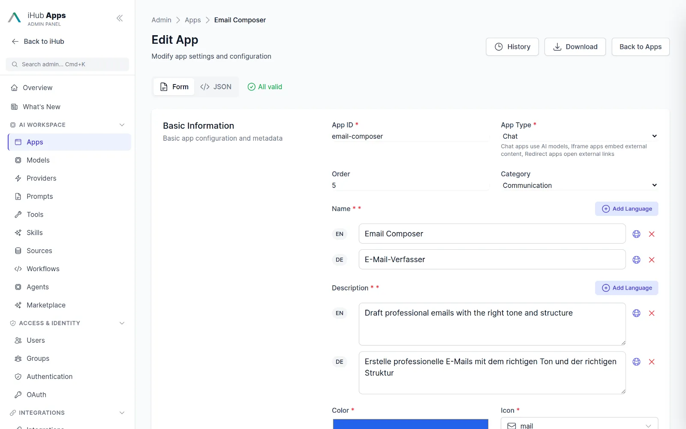
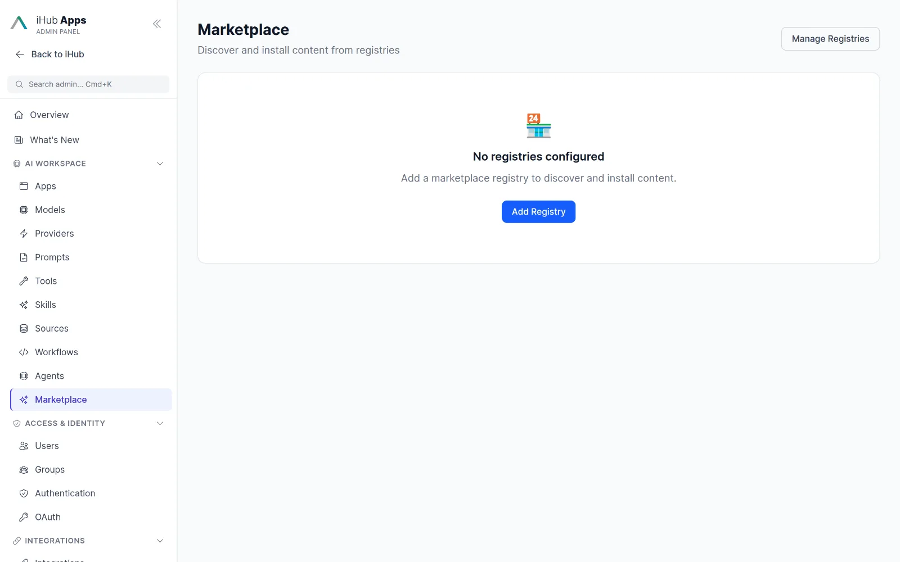
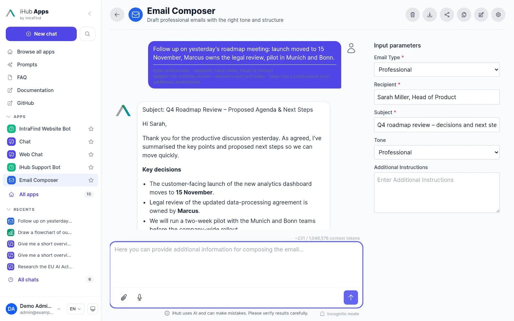
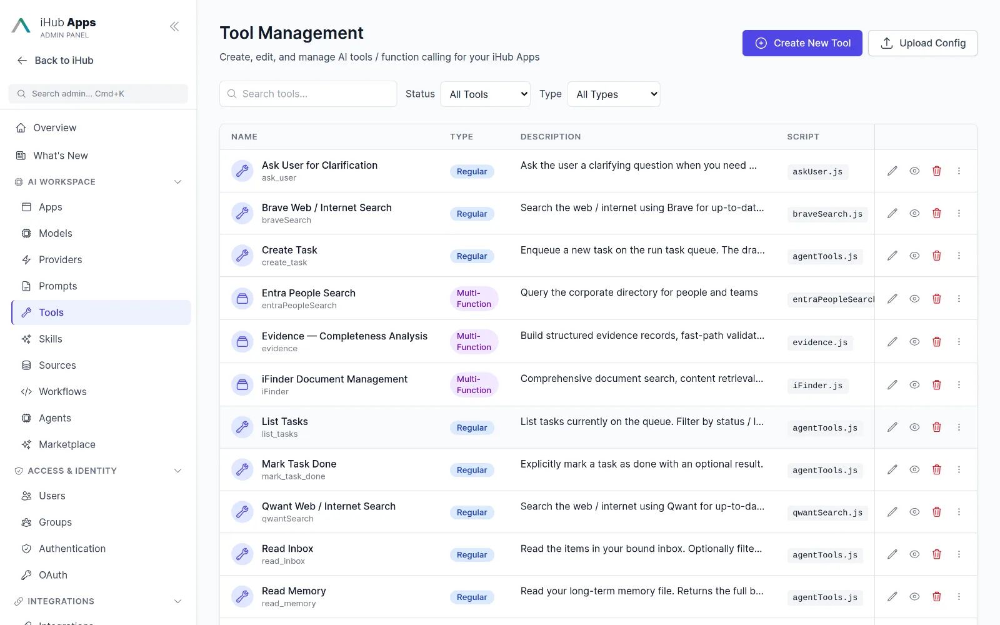
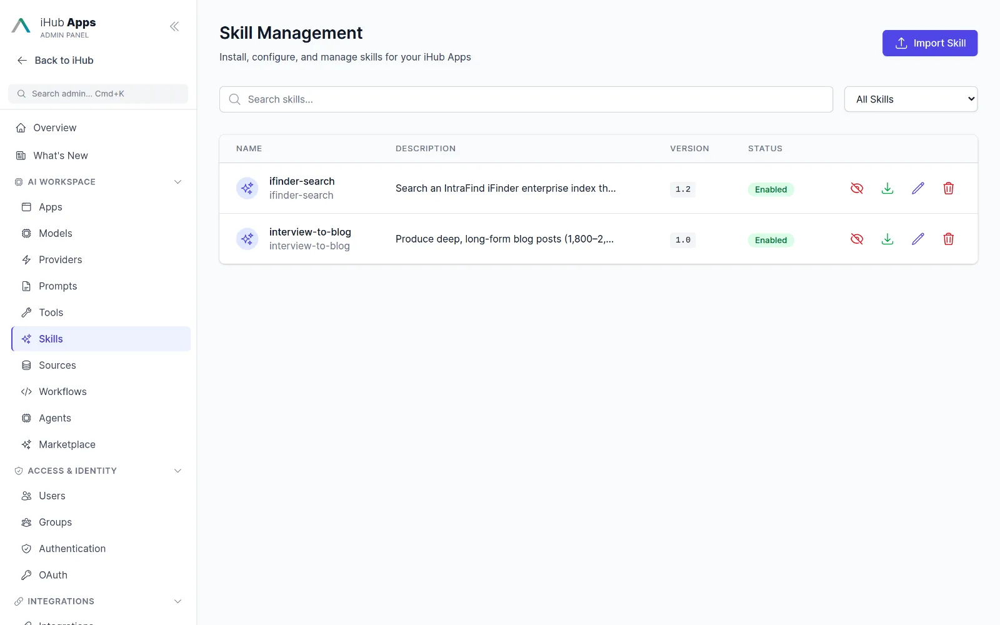
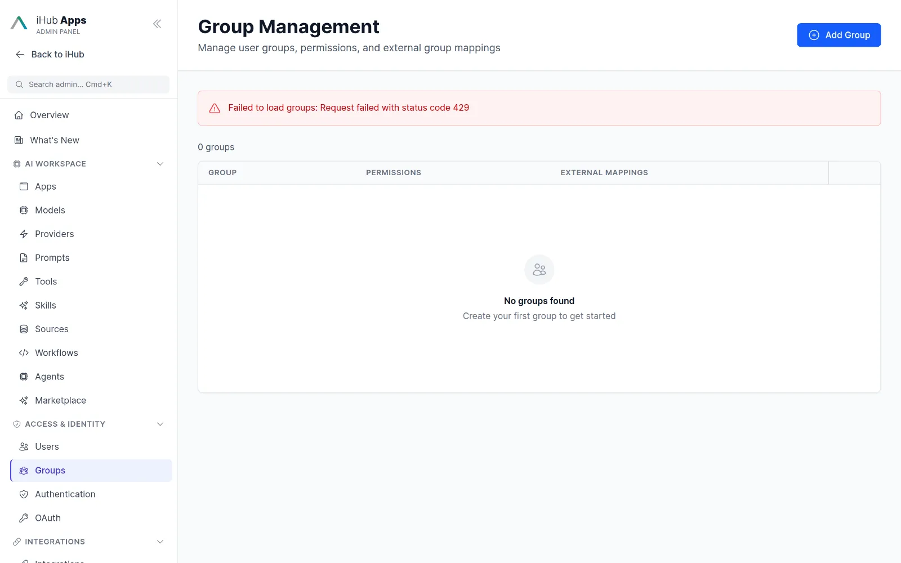
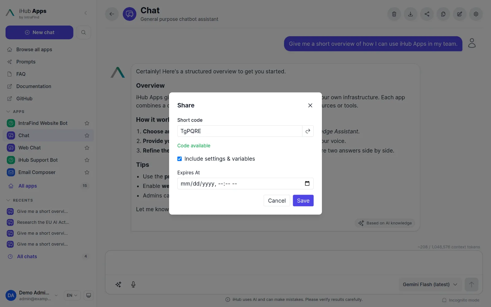

iHub Apps
Build apps with expert instructions, knowledge and tools to support recurring tasks, and roll them out to exactly the teams that need them.

Example use cases. Find ideas in the built-in catalogue.
24 apps ship with every installation, 15 of them enabled by default. 43 more are available as examples and through the marketplace.
Chat & assistants
Chat, Web Chat, iHub Support Bot, Website Bot, Idea Coach, iAssistant.
- Communication: Email Composer, Outlook Reply, Social Media, Translator
- Research & analysis: File Analyzer, Summarizer, Meeting Briefing, Agenda Generator, NDA Risk Analyzer, Parliamentary Questions Analyzer
- Specialized: Diagram Generator, Image Generator, Audio Transcription, Customs Tariff Assistant, iFinder Search

MarketplacePreview
Install apps, models, prompts, skills and workflows from the official IntraFind registry or your own registry with one click. Export any app as JSON and import it on another installation.

Simple to build. Equip your app with instructions, inputs, knowledge and actions.
Expert instructions
System prompt per language, greeting, writing style, temperature, output format, starter prompts and global variables such as date, user and locale.
Input forms
Typed variables with dropdowns, predefined values and required fields turn a prompt into a form anyone can fill in.
Knowledge
Attach sources: files, URLs with content cleaning, internal pages or iFinder queries. Load them into the prompt or let the model fetch on demand.
Tools & skills
Web search, Jira, people search, iFinder, OpenAPI operations, MCP servers, other apps and workflows. Skills package reusable procedures.
Everything an app can do.
A form, not a blank page
Required and optional parameters appear next to the chat. Users pick an e-mail type and tone, paste their notes and get a finished draft.

Create apps with the wizard, edit them as a form or as JSON
Describe the app in a sentence and let the AI generate the configuration, or fill in the form. Every field is validated against a schema, and the JSON view shows exactly what is saved.
- Clone, download and upload apps as JSON
- Change history with before/after diffs
- App inheritance: child apps override a parent
Tools, OpenAPI imports and MCP servers
Enable tools per app. Import any OpenAPI specification and pick the operations the model may call; connect MCP servers with bearer or OAuth authentication. Apps can call other apps and workflows as tools.

Skills for procedures that repeatPreview
Skills follow the Agent Skills standard (SKILL.md plus references, scripts and assets). Assign them to apps, restrict them per group, and declare which tools a skill may use.

Collaborate with ease. Share your apps across the organization.
Roll out per team
Apps, prompts, models, skills, tools and workflows are permissioned per group. Groups inherit from each other and map to LDAP, OIDC or proxy groups, so “Employees” from your directory simply works.
- Content admins manage only their own groups
- Anonymous, authenticated and admin defaults
- Enable or disable any app with one switch

Bring apps anywhere
Use apps inside Outlook, from the browser side panel on any web page, inside Nextcloud Files, as a Microsoft Teams tab, through the OpenAI-compatible API or as tools in Claude, Cursor and VS Code via the MCP gateway.

Short links with prefilled parameters
Share a link that opens a specific app with variables already filled in, optionally with an expiry date. Ideal for intranet buttons and process documentation.

Questions & answers
What is an app?
A standardized use case with a fixed frame: system prompt, input variables, output format, preferred and allowed models, plus the tools, sources and skills it may use. Users get reproducible results without knowing anything about prompting.
How is an app different from the general chat or a prompt template?
Chat is fully free-form. A prompt template is text a user inserts and edits. An app fixes the frame and can be rolled out per group. Skills sit in between: reusable multi-step procedures that several apps share.
Can I create an app without coding?
Yes. The admin UI has a creation wizard with AI generation and a full form editor. JSON is available for power users and for moving apps between installations.
Can apps produce structured data?
Yes. Define a JSON schema as output and, optionally, a custom React renderer that displays the result as a table, checklist or chart.
Where do apps run?
On your iHub server. The model can be a cloud API, an IntraFind-hosted GPU in a German data centre, or your own local endpoint.
The essential AI stack for your company.
Simple for business users. Ready for advanced use cases. Governed by IT.
Chat
Model-agnostic chat for everyone in the company.
Learn more →Workflows & Agents
Multi-step automation with human approval.
Learn more →Integrations
Tools, MCP, Outlook, browser, Nextcloud, Teams.
Learn more →API
OpenAI-compatible API, MCP gateway, OAuth.
Learn more →Models
Every major provider plus local models.
Learn more →Run iHub Apps in 60 seconds.
One command installs the standalone binary. No Node.js, no Docker, no database. Open http://localhost:3000, add a model key, and your team has 24 AI apps.
curl -fsSL https://raw.githubusercontent.com/intrafind/ihub-apps/main/install.sh | sh